A bold pivot that turned a small A/B test into new subscriber growth for Brainly.
Brainly is a global B2C EdTech platform where over 350 million students ask questions and get homework help from peers, tutors, and subject matter experts. My focus was specifically the US and Brazilian markets, where the business runs on a freemium subscription model: a free, ad-supported tier, and a Premium subscription that unlocks ad-free browsing, unlimited access to top solutions, and direct tutor support.
In 2023, our playbook relied heavily on traditional funnel optimization – tweaking paywall copy, refining checkout flows, and adjusting meter limits. These incremental changes produced small conversion lifts, but growth in paid subscribers had hit a firm ceiling.
We realized that making checkout frictionless doesn't matter if users don't see a reason to buy in the first place.
Through user interviews and survey data, a clear narrative emerged: free users weren't converting because they perceived the basic, ad-supported tier as "good enough." Our marketing presented Premium as an ad-blocker rather than an educational power-up. Users simply didn't understand the core value of a paid subscription, and our product experience did little to showcase what they were missing out on.
The goal we set: increase Premium's perceived value by redesigning the experience around it, for both free and paying users.
As the Senior Product Designer leading monetization initiatives, I directed the design strategy and end-to-end execution. Working alongside a UI designer, user researcher, data analyst, and copywriter, my role spanned:
To bridge the gap between user perception and business goals, we combined qualitative user research with deep data analytics.
In 1:1 sessions with subscribers and free users, a clear pattern emerged: people didn't perceive enough value in the Premium plan to justify paying for it. The plan wasn't communicating what it actually unlocked, and much of Brainly's highest-value content (like expert-verified, step-by-step solutions) simply wasn't visible in users' day-to-day experience of the product.
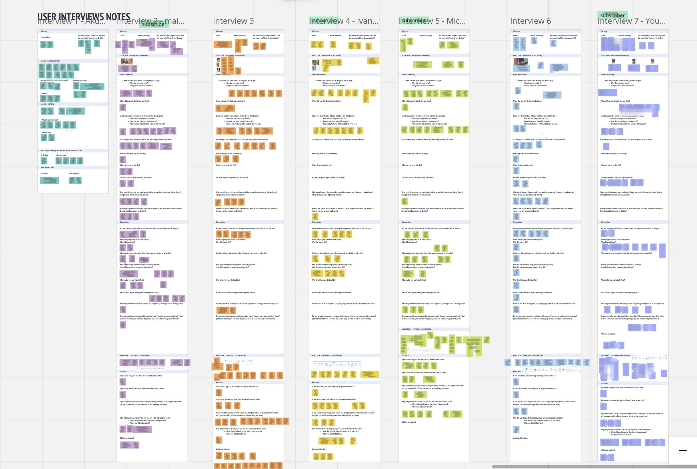
User interview notes and affinity mapping, one board per participant – notes blurred for participant privacy.
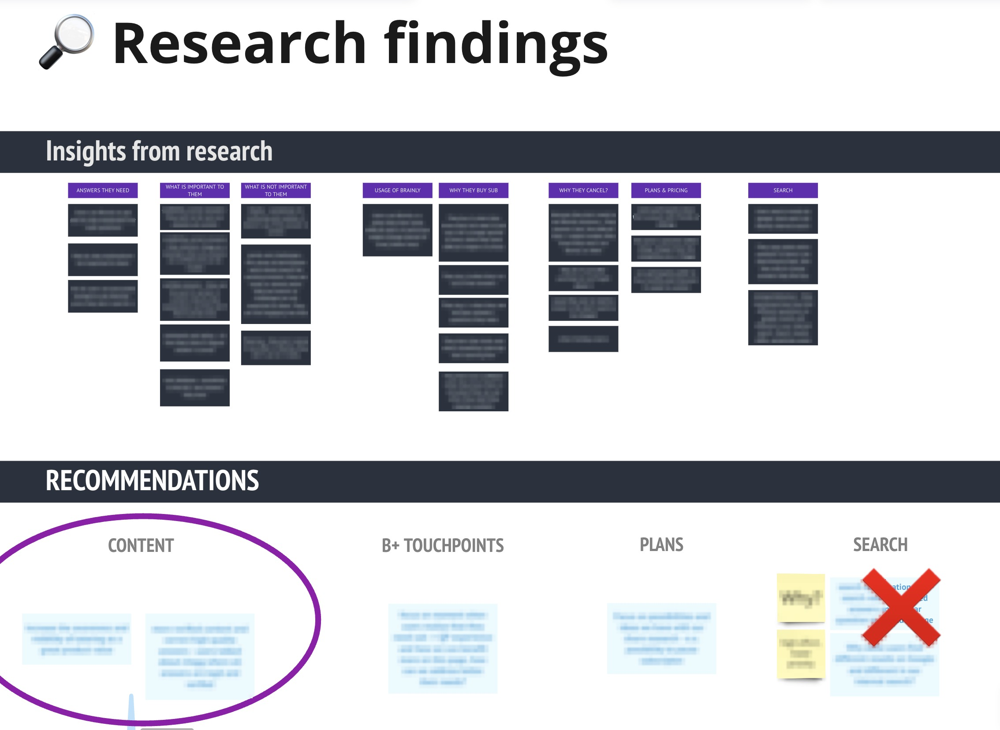
Synthesizing the interviews into themed findings and early recommendations – specific quotes blurred.
Synthesizing that qualitative insight with our data analyst revealed a striking metric: 81% of active free users hadn't encountered a single Verified Answer in the last quarter. The problem wasn't a lack of interest in paid features – it was that our UI and communication made our highest-value content hard to discover.
Armed with these insights, I facilitated a series of co-creation sessions with product managers, engineers, and marketers to translate our findings into testable concepts centered on content value visibility.
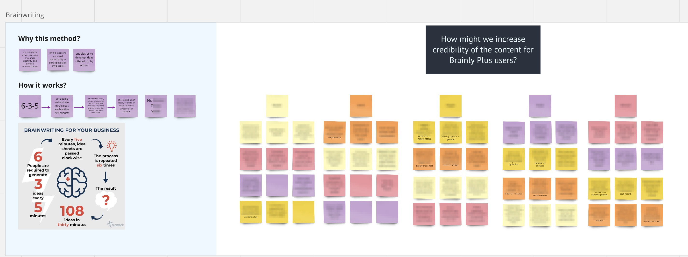
The brainwriting board – each participant building on the ideas passed to them.
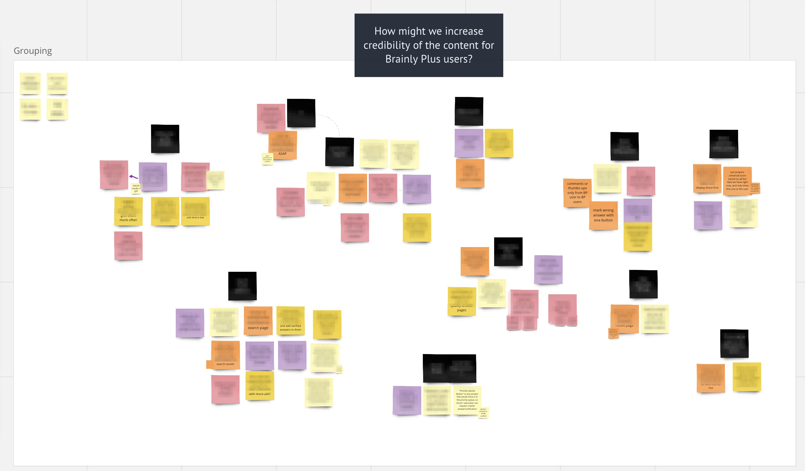
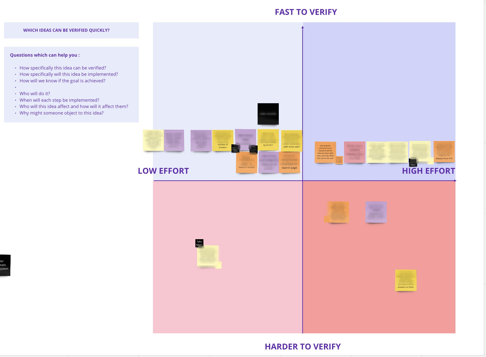
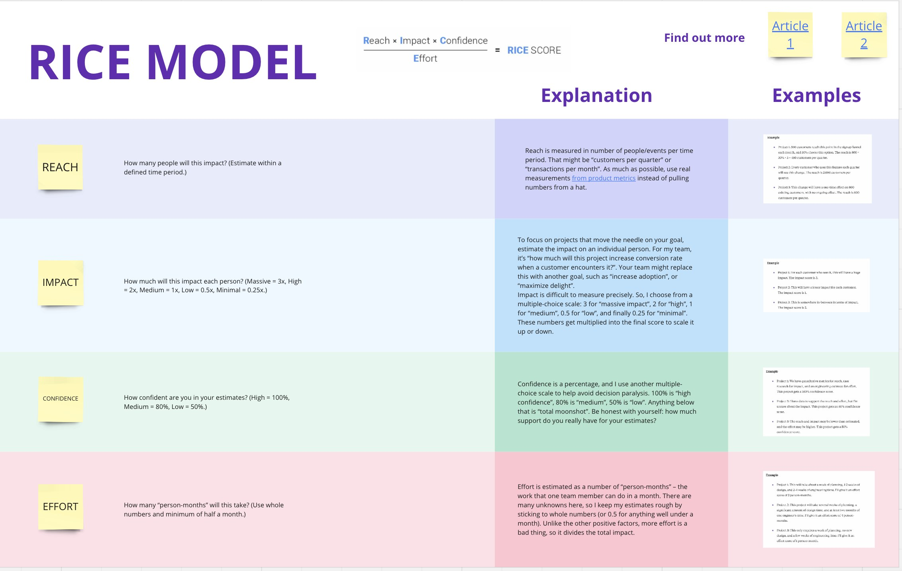
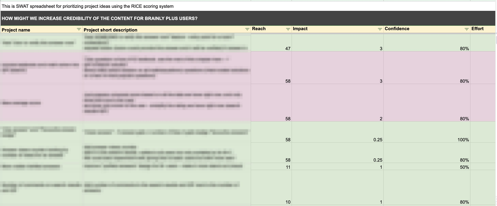
Our first hypothesis: we will boost subscription value by guiding users toward Tutoring sessions (live sessions with experts) whenever they landed on an unsatisfactory answer. I designed a fake-door experiment testing four variants of this idea, embedded directly within the answer flow. Variant D, with explicit, benefit-driven messaging and a high-contrast CTA focused on "Step-by-Step Verified Answers," outperformed the rest with a +1.77% CTR lift to the checkout screen.
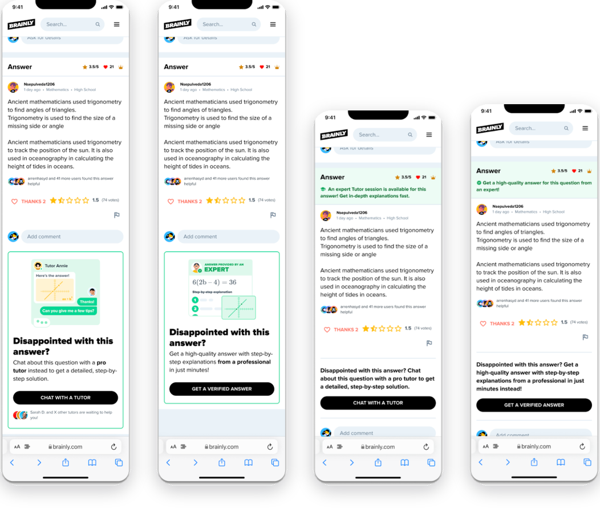
The four variants tested – Variant D, with the clearest CTA copy, won at +1.77%.
We wanted to build on that winning variant by shifting the value proposition further toward problem-solving, rather than just "get an answer." I designed two new variants based on the same entry point into a Tutor session and planned an A/B test to validate the direction.
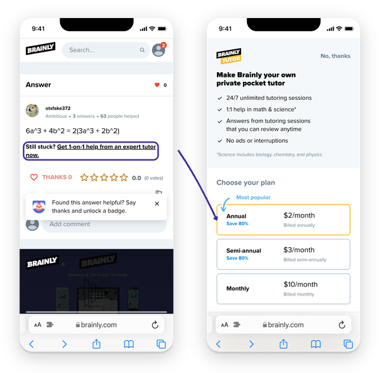
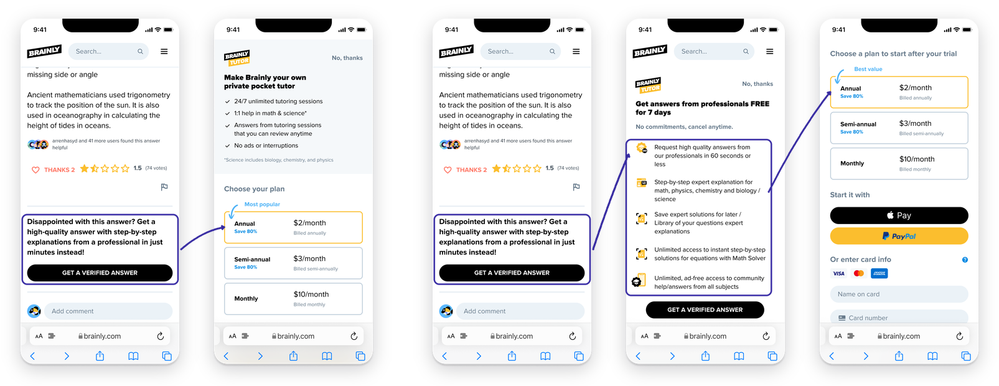
Control vs. Variant B and C, designed for the second iteration's planned A/B test – highlighted callouts show the entry point tested in each flow.
Before launching the second iteration, we ran a traffic review with our data analyst to properly size the experiment. We found we'd need roughly 20 weeks to reach a reliable result, given our current traffic and Tutoring package volume. That was far too slow to be useful, so we pivoted to something bigger instead of running a slower version of the same test.
The hypothesis didn't change, but the scope did: instead of testing incremental variations on a single page, we expanded to redesign every Tutoring and Verified Answer touchpoint across the entire platform at once, turning a slow, isolated experiment into a unified, platform-wide value proposition rollout.
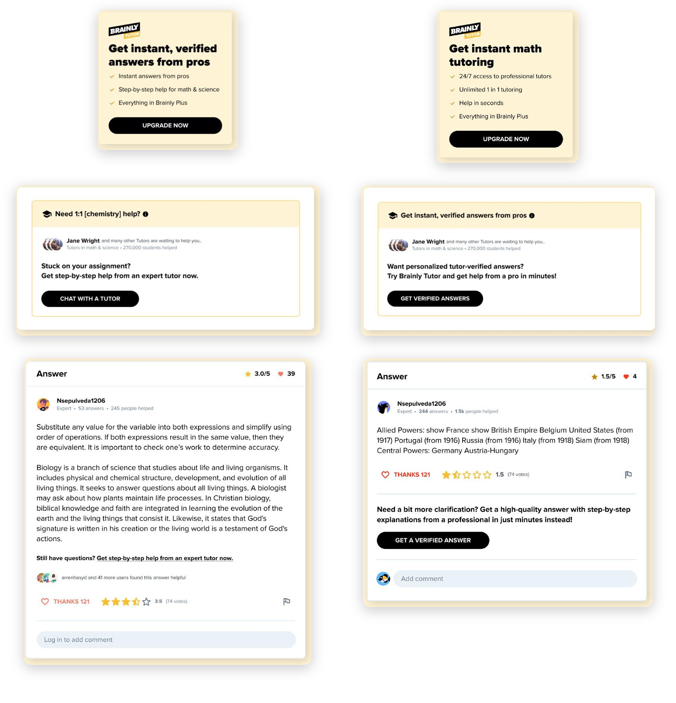
Control vs. Variant B, revised across every Tutoring-related entry point on the service.
The winning variant rewrote the value proposition wherever it appeared in the product, from "Chat live with an expert tutor" to "Get verified answers from a pro in minutes", leaning into real value, speed, and reliability instead of a live-chat promise.
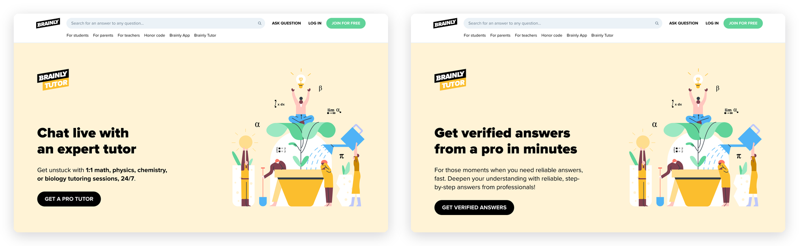
Control vs. the winning design, live on the Tutoring landing page.
The experiment produced a significant lift across our key conversion metrics, validating both the user-centric direction and the decision to pivot toward a data-driven, faster-moving approach.